Captured from the shipped app/index.html and the shipped bundle, signed in through the real form, on WebGL2. No GPU: every pixel rasterised on the CPU by mesa lavapipe.
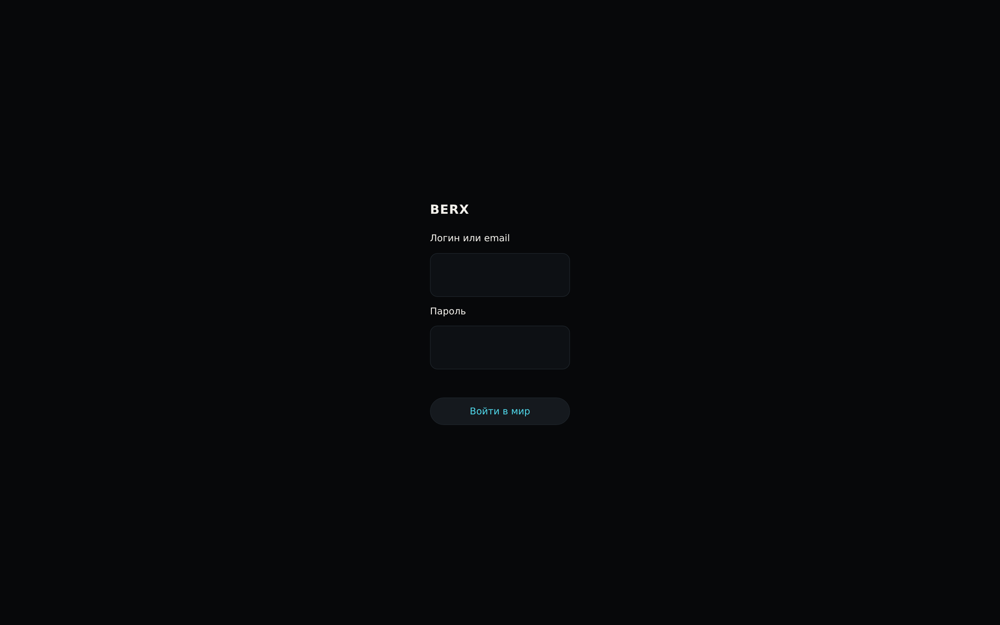
01-boot-entry BERX boot / entry 1600x1000 @2 · not signed in (entry form) · none yet
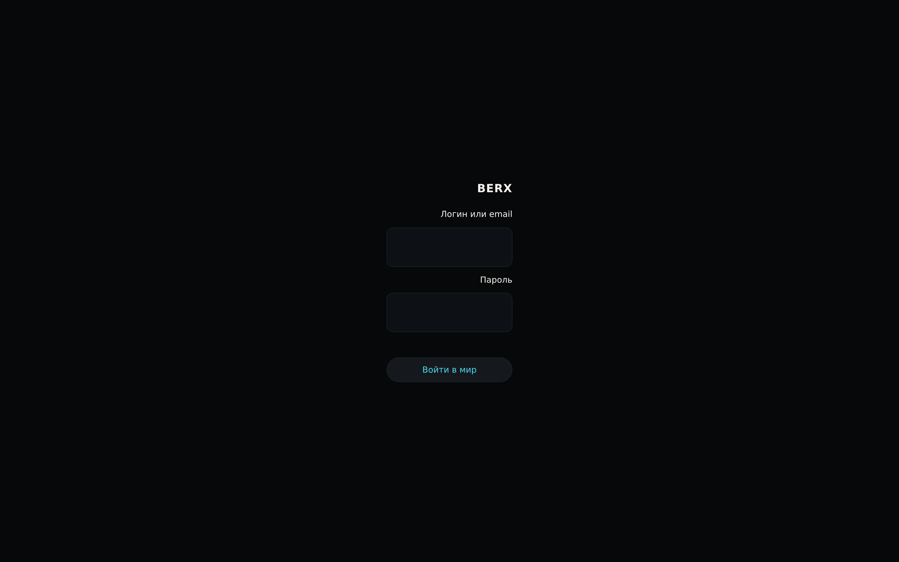
02-entry-locale-rtl Locale resolution and RTL, on the real entry 1600x1000 @2 · not signed in (entry form) · none yet
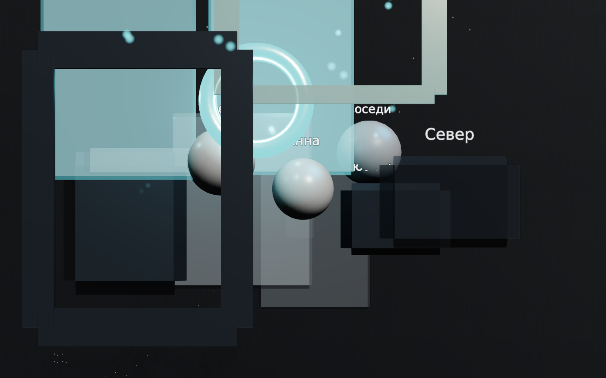
03-living-world The 5D living world 1600x1000 @2 · region "world" · webgl2
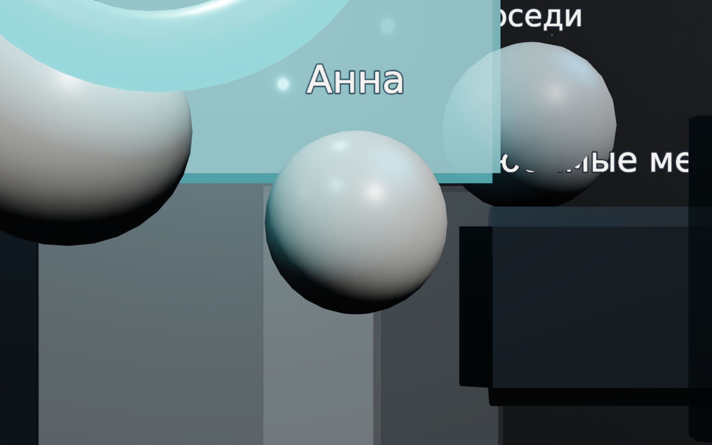
04-now BERX NOW 1600x1000 @2 · region "now" · webgl2
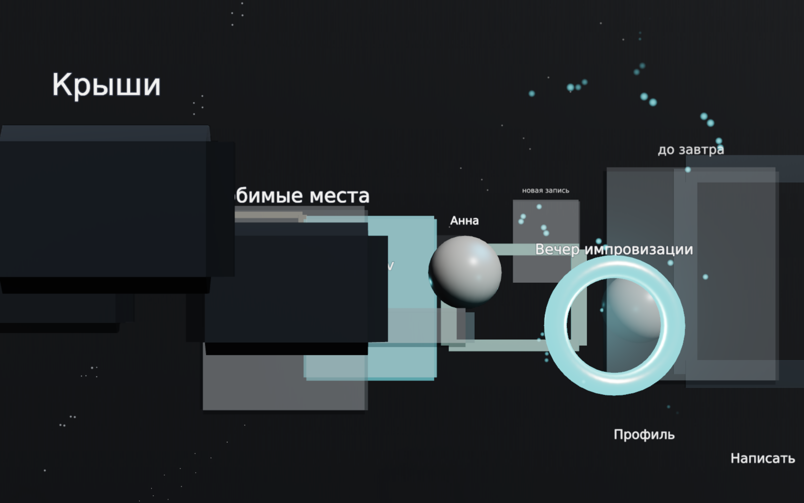
05-people-gravity People, and social gravity 1600x1000 @2 · region "person", focused person:78 · webgl2
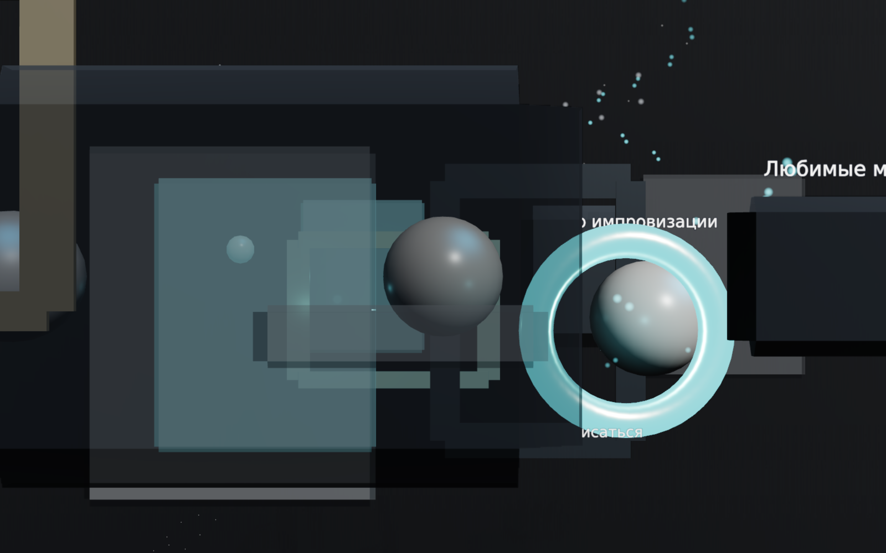
06-dating-world The dating world, and only your own 1600x1000 @2 · region "person", focused person:77 · webgl2
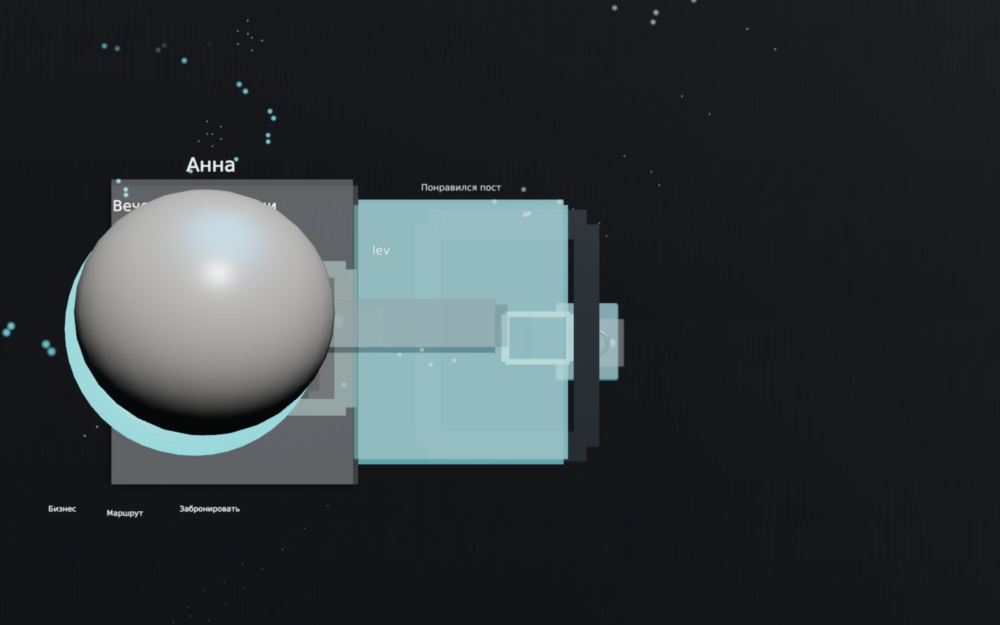
07-place-business A place the server calls a business 1600x1000 @2 · region "place", focused place:4212 · webgl2
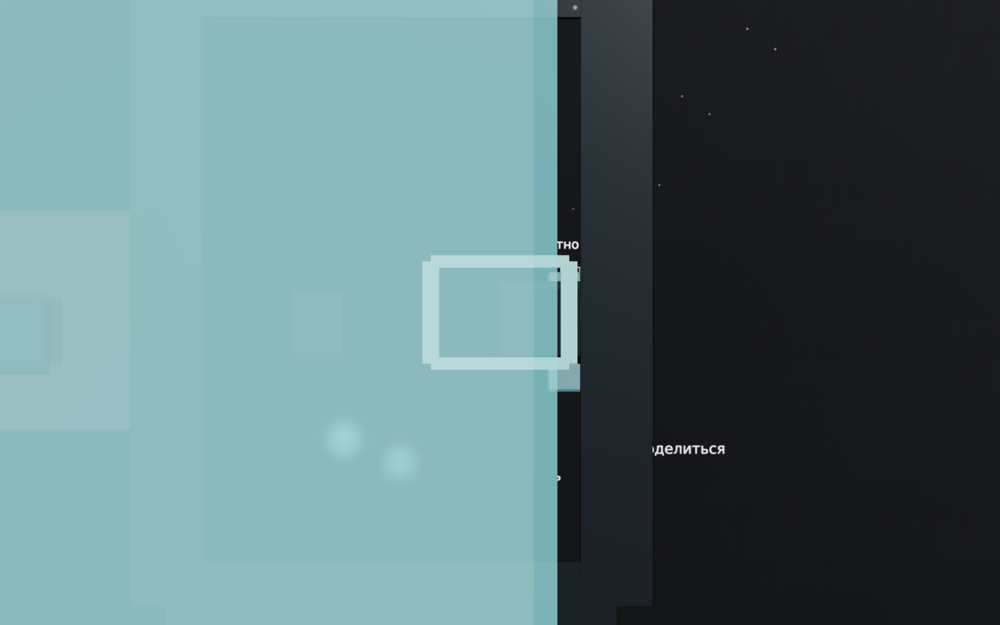
12-offer-at-a-place An offer, attached to a real place 1600x1000 @2 · region "place", focused experience:offer-501 · webgl2
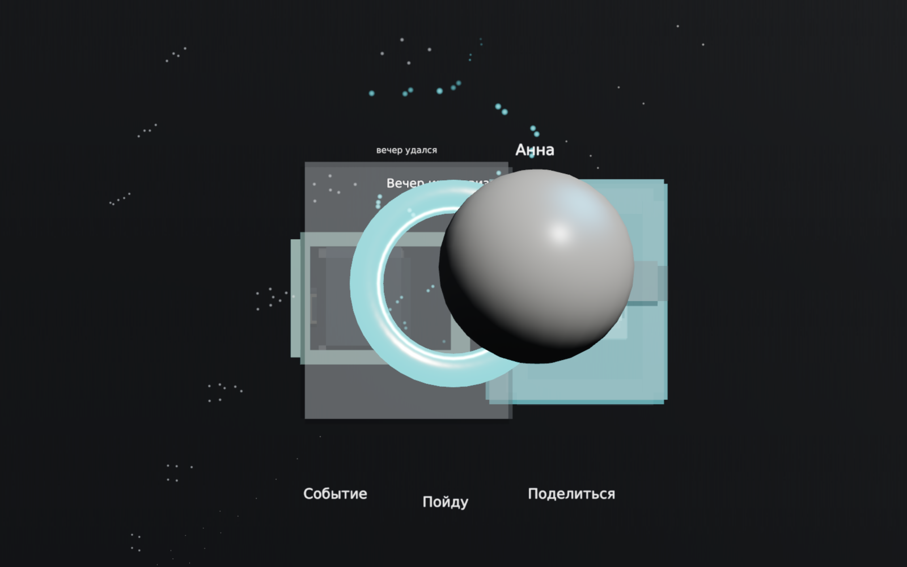
08-events The events world 1600x1000 @2 · region "event", focused event:908 · webgl2
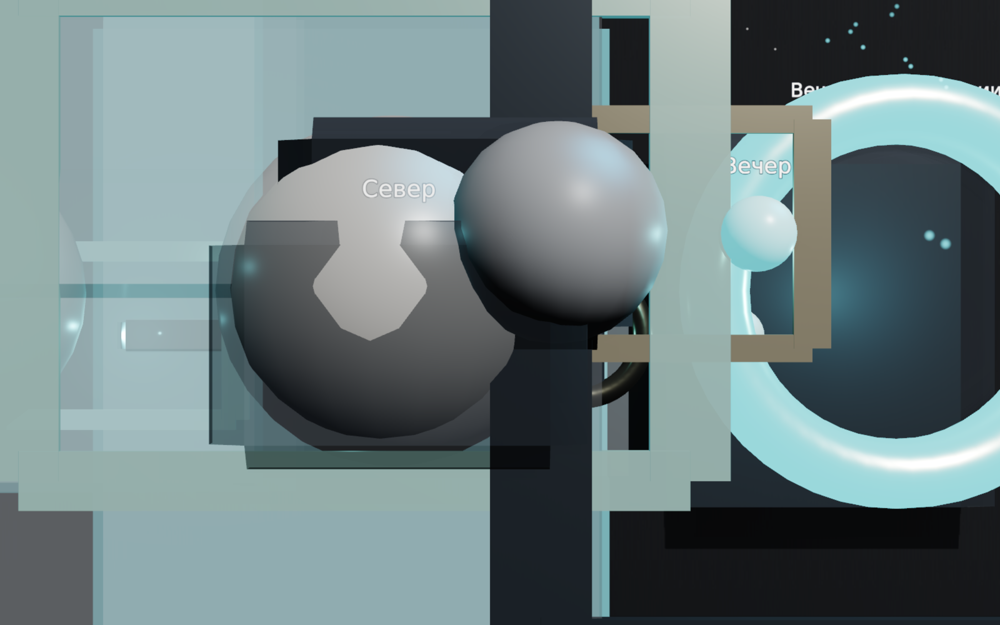
09-conversation Messages, as a region you stand in 1600x1000 @2 · region "conversation", focused message:78 · webgl2
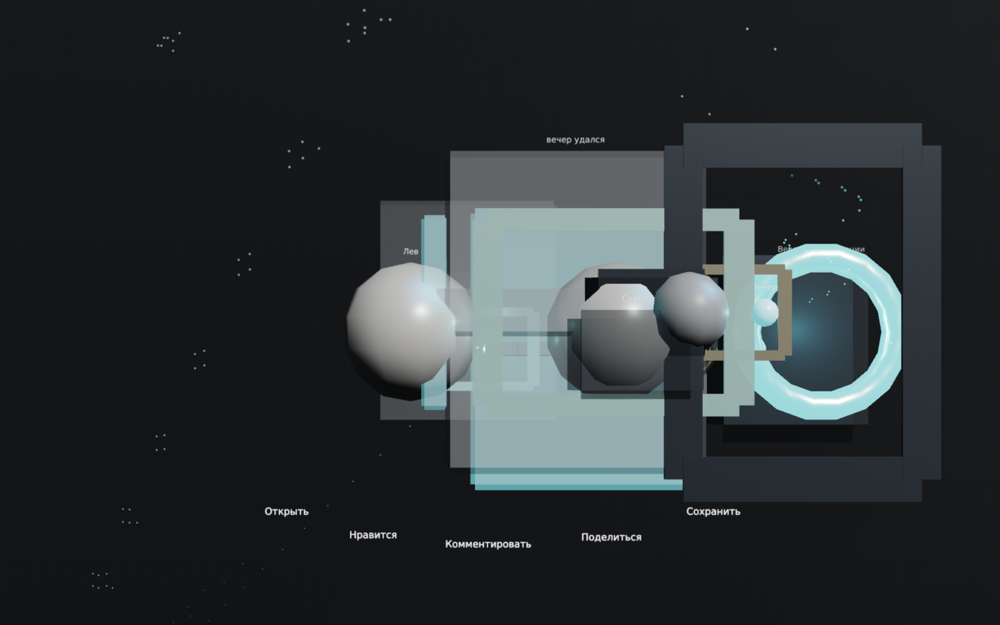
10-stories Stories, which leave when the server says they do 1600x1000 @2 · region "now", focused moment:story-91 · webgl2
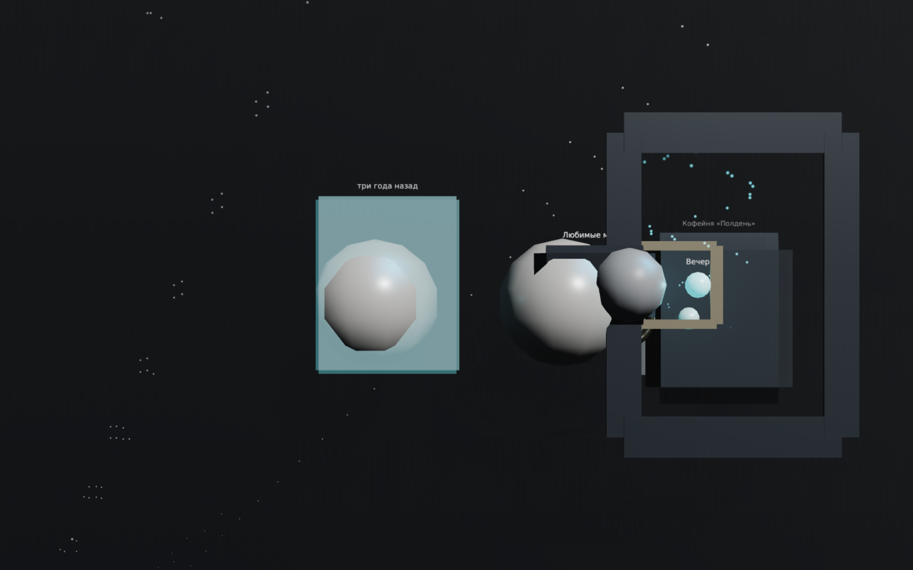
11-memories-temporal T, scrubbed three years back 1600x1000 @2 · region "now", focused moment:story-91 · webgl2
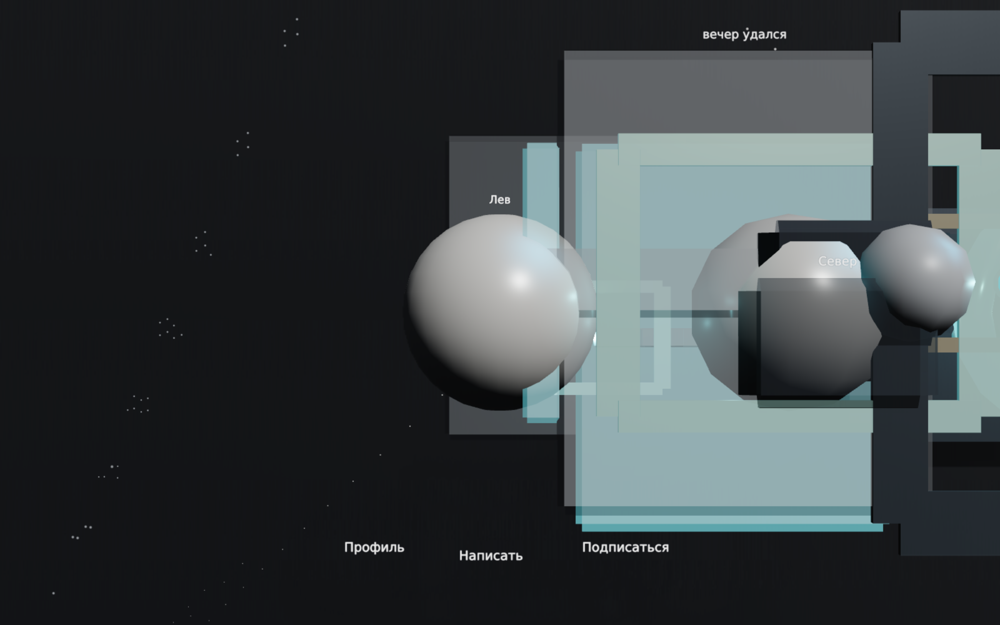
13-creator-world A creator, with their work standing around them 1600x1000 @2 · region "person", focused person:78 · webgl2
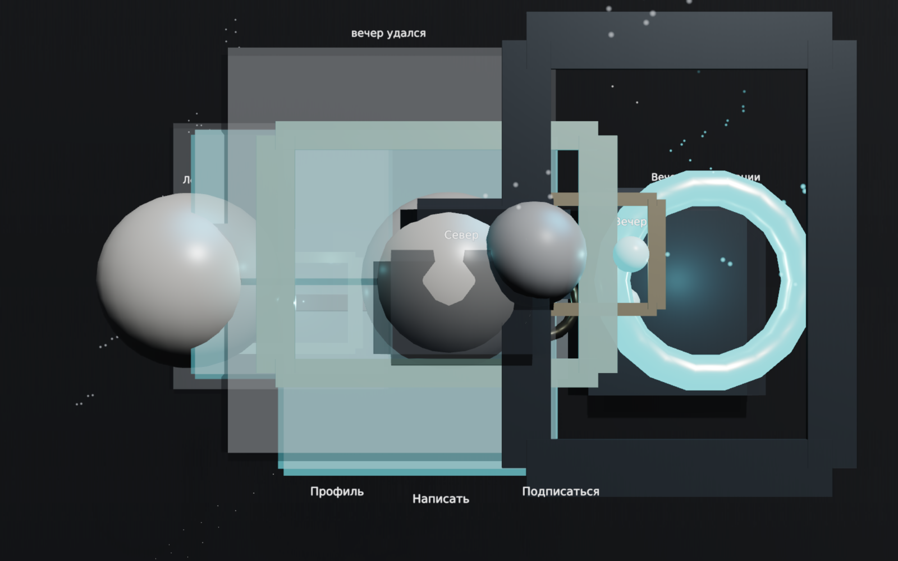
14-profile-in-world A profile, inside the world 1600x1000 @2 · region "person", focused person:77 · webgl215-spoken-search A spoken question, answered in the world 1600x1000 @2 · region "person", focused person:77 · webgl2